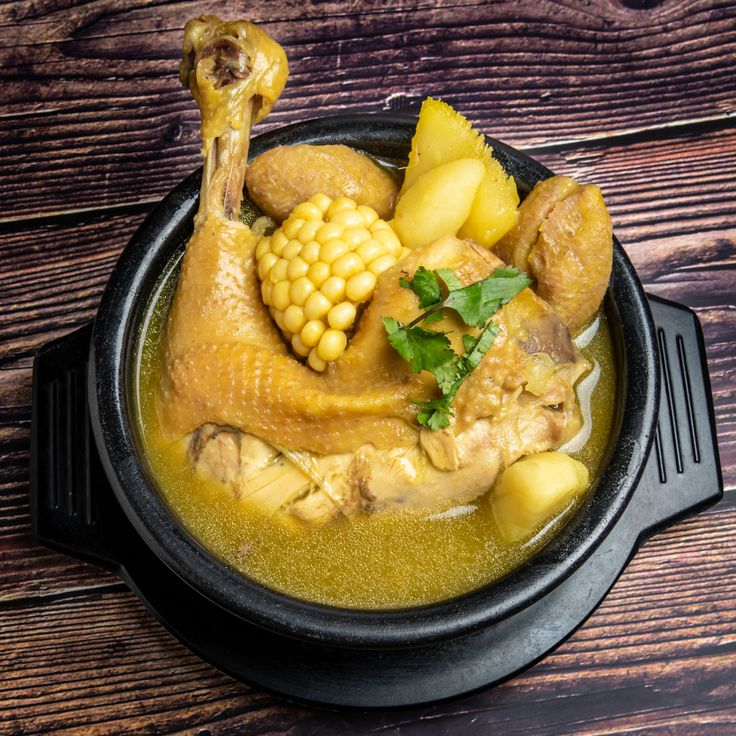

AJIACO

Descripción
El ajiaco colombiano es una sopa tradicional y emblemática de la gastronomía de Colombia, especialmente de la región andina y Bogotá. Este plato se caracteriza por su consistencia cremosa y su sabor reconfortante, ideal para climas fríos. Se prepara con tres tipos de papa (papa criolla, papa pastusa y papa sabanera), que se deshacen durante la cocción y le dan su textura única. Además, incluye pollo desmenuzado, mazorca de maíz y guascas, una hierba aromática que le da su sabor distintivo. Se sirve tradicionalmente con alcaparras, crema de leche y aguacate, que añaden un toque fresco y cremoso al plato.
El ajiaco no solo es una delicia culinaria, sino también un símbolo de la cultura colombiana. Es un plato que reúne a familias y amigos, especialmente en ocasiones especiales o días festivos. Su preparación varía ligeramente según la región, pero siempre mantiene su esencia: una sopa abundante y llena de sabores que refleja la riqueza de los ingredientes locales. Para muchos colombianos, el ajiaco es más que una comida; es un recuerdo de hogar y tradición.
Ingredientes
- Pollo: 1 kilo de pollo (preferiblemente en presas o pechuga).
- Papa pastusa: 1 kilo (es una papa amarilla y harinosa, esencial para espesar el ajiaco).
- Papa criolla: 1/2 kilo (una papa pequeña y amarilla que se deshace y aporta sabor).
- Papa sabanera: 1/2 kilo (opcional, pero aporta textura).
- Mazorca de maíz: 2 unidades, cortadas en trozos.
- Guascas: Un manojo (hierba aromática típica que le da el sabor característico al ajiaco).
- Ajo: 2 dientes, picados.
- Cebolla: 1 grande, picada.
- Cilantro: Opcional, para decorar.
- Crema de leche: Al gusto, para servir.
- Alcaparras: Al gusto, para servir.
- Aguacate: 1 o 2 unidades, cortado en rodajas, para acompañar.
- Sal y pimienta: Al gusto.
Preparacion
- En una olla grande, sofríe la cebolla y el ajo. Luego, agrega el pollo y dóralo ligeramente.
- Añade agua suficiente para cubrir el pollo y deja cocinar hasta que esté tierno.
- Incorpora las papas (pastusa, criolla y sabanera) y la mazorca de maíz. Cocina hasta que las papas se deshagan y espesen la sopa.
- Agrega las guascas y deja cocinar a fuego lento para que los sabores se integren.
Inicio